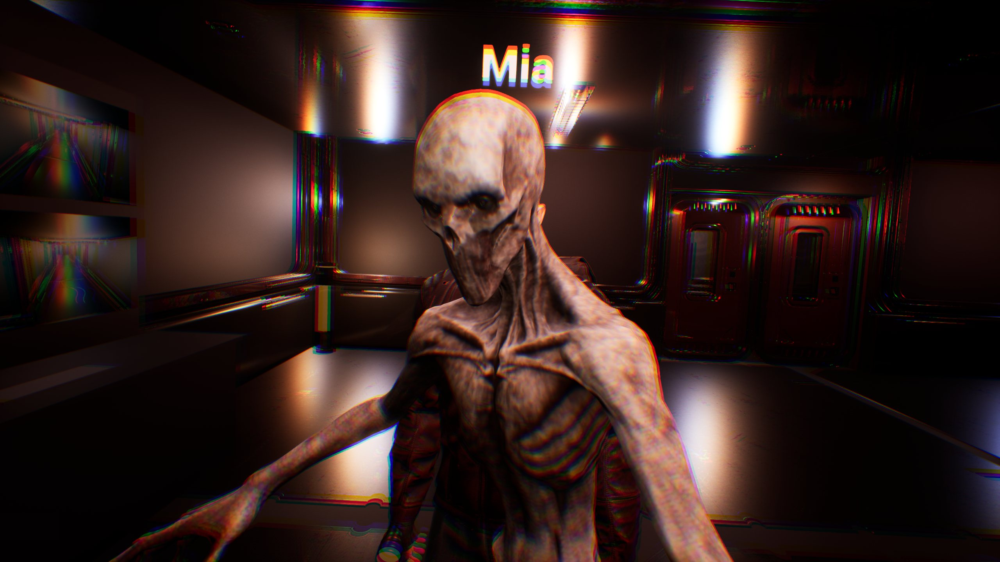
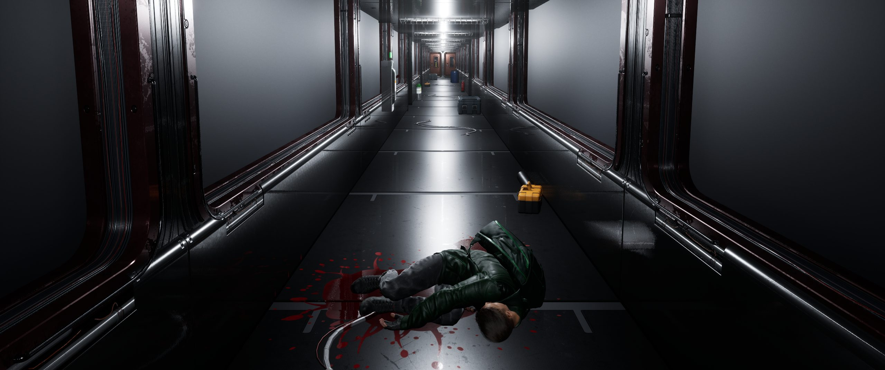
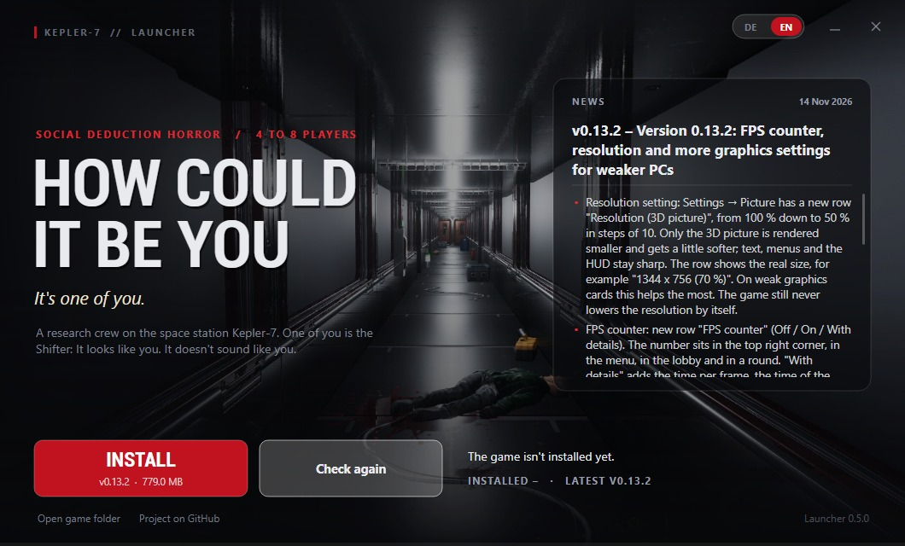
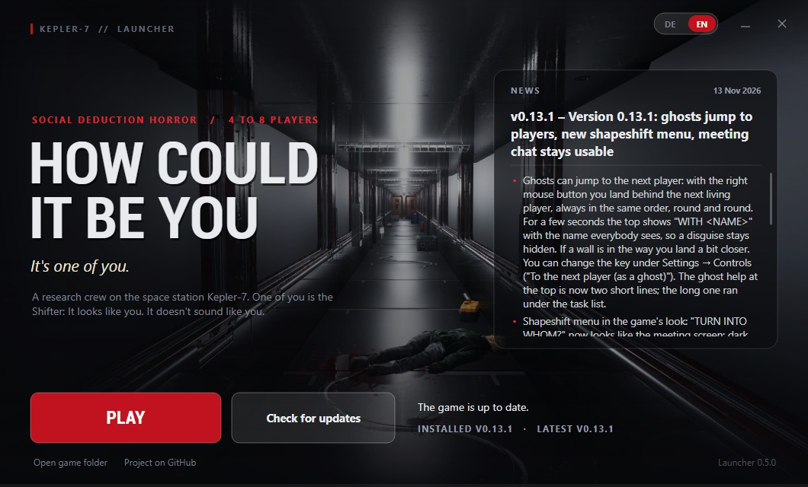

Do 13 tasks across the station
From rewiring power to cooling the samples, spread over the rooms. Take too long and the game gives you a tip.

Four to eight players on a research station in deep space. One of them is the Shifter, a thing that kills and wears its victims' faces.
Kepler-7, day 41, 03:12 station time
For 41 days the crew of Kepler-7 studied a sample from the ice of Europa. Tonight the glass cracked. What came out copies skin, suit and name badge. Only not the voice.
From rewiring power to cooling the samples, spread over the rooms. Take too long and the game gives you a tip.
It turns into any player, suit and name badge included. Its voice stays its own, so listen.
The Shifter cuts the power and seals doors, then waits. Your flashlight runs on a battery.
Report a body or hit the emergency button, talk it out, then vote. A wrong vote throws out a crewmate.

Hardly a room is a plain box. Cameras watch the corridors, and the admin table counts how many people are in each room, but not who.
The code works across networks through Epic Online Services, with no port forwarding. Windows only for now.
The same code finds the lobby over LAN, on Windows and Linux.
Type the host's IP address, or a host name from a tunnel service.
The host picks meetings only, proximity or always. The dead only hear the dead.
64-bit Windows. Unzip it and run the launcher; it installs the game, about 780 MB.
x86_64 with Vulkan, like Ubuntu 22.04. New, and not yet tried on a real Linux PC.

The launcher downloads only what changed: 47 to 136 MB between recent versions.
Voice chat and push-to-talk fixed.
14 Nov 2026FPS counter, resolution and more graphics settings for weaker PCs.
14 Nov 2026Ghosts jump to the next player, a new shapeshift menu and a meeting chat that stays usable.
13 Nov 2026New map Ikarus with security cameras and a floor plan, plus new task minigames.
13 Nov 2026
No. The launcher and the game are free downloads from GitHub.
No. The game signs in to Epic Online Services with a device ID, with no account or password.
Everyone needs the same version, so click Update in the launcher. The first time you host, let Windows allow private and public networks.
Jump scares, loud noises, flickering light and darkness, recommended from 16. You can turn the scares down to reduced or minimal.
The launcher and the game are not signed yet, so SmartScreen warns once. Click More info, then Run anyway.